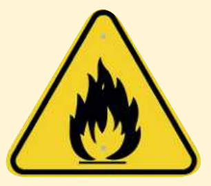
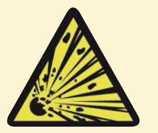
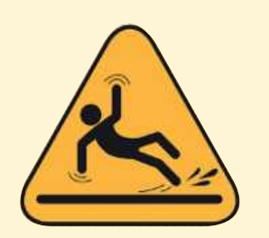

TEMATIKA 4: NJOHJA E RREZIQEVE1. Ki kujdes, Dielli!
Puno në shtëpi
Ndihmë: si të punoj?
Zgjidh një kartë, pastaj zgjidh vendin ku duhet të shkojë. Për ta hequr kartën, zgjidhe përsëri. Kur të mbarosh, shtyp butonin “Dërgo”.
1.
Njihu me disa nga shenjat e rrezikut.
Vendos secilin kuptim poshtë shenjës së duhur.
Mund të sëmurem.
Mund të ketë zjarr.
Mund të rrëshqas.
Mund të shpërthejë.


